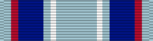

Air and Space Campaign Medal
Service awardFormerly the Air Force Campaign Medal · ASCM
For Airmen who directly supported a designated operation from outside the combat area, after March 24, 1999.
Check your eligibility and build your ribbon rackHow you get it
You earn this by meeting the requirements. No recommendation is needed. If it's missing from your record, current members can have their MPF add it. Veterans can request it from AFPC with a Standard Form 180 and supporting documents.
You qualify if any of these apply
- Assigned or attached to a unit engaged in a designated operation and deployed in its support for 30 consecutive or 60 nonconsecutive days
- At home station, performed functions historically deployed forward (e.g., sortie generation, intelligence, surveillance, targeting, cyber operations) in direct support of a designated operation for 30 consecutive or 60 nonconsecutive days
Quick facts
- Category
- Campaign and service
- Type
- Service award
- Authorized devices
- Service Star
- WAPS points
- 0
- Position in the AFPC listing
- 59 of 91 (listed in order of precedence)
Full AFPC fact sheet text
Background
This medal, authorized by the Secretary of the Air Force on April 24, 2002, may be awarded to members of the United States Air Force who, after March 24, 1999, participated in or directly supported a significant U.S. military operation designated by the Chief of Staff of the Air Force. The medal is awarded only to personnel who provided direct support of combat operations from outside a geographic area determined by the Joint Chief of Staff.
Criteria
Service members must be assigned or attached to a unit engaged in the operation. Personnel must be engaged in direct support for at least 30 consecutive days or for 60 nonconsecutive days.
For this medal, direct support is defined as: 1) deploying in support of an operation, or 2) if at home station, performing functions or missions that historically were deployed forward, or entirely new and future missions, which due to technological advances, are no longer constrained by geographic location. This includes, but is not limited to, sortie generation, intelligence, surveillance, targeting, computer network attack operations, etc.
No individual shall be eligible for both the Air and Space Campaign Medal and a Department of Defense campaign/service medal awarded during a single tour in the designated operation. Participants are limited to only one ASCM for assignment to a designated operation. A second award of the ASCM is only authorized to individuals for nonconsecutive and non-concurrent assignments to separate operations, provided the participants meet the criteria for each. For each succeeding operation that justifies award of the ASCM, a service star is worn on the ribbon/medal. Multiple award of the ASCM for assignments or rotations to the same operation is not authorized.
The Chief of Staff of the Air Force designates the military operations that qualify for the ASCM. The Commander, Air Force Forces, will designate those organizations that provided direct qualifying support.
Military operations that qualify for the ASCM are:
-ALLIED FORCE, March 24, 1999 – June 10, 1999
-NOBLE ANVIL, March 24, 1999 – July 20, 1999
-Kosovo Task Force Saber, March 31, 1999 – July 8, 1999
-Kosovo Task Force Hunter, April 1, 1999 – Nov. 1, 1999
-SUSTAIN HOPE/SHINING HOPE, April 4, 1999 – July 10, 1999
-ALLIED HARBOUR, April 4, 1999 – Sept. 1, 1999
-Kosovo Task Force Hawk, April 5, 1999 – June 24, 1999
-JOINT GUARDIAN, June 11, 1999 – Dec. 31, 2013
-Kosovo Task Force Falcon, June 11, 1999 – Dec. 31, 2013
-Operation Odyssey Dawn and Operation Unified Protector, Feb. 26, 2011 – Oct. 31, 2011
Currently, operations related to the Global War on Terrorism (to include Iraqi Freedom and Enduring Freedom) are not eligible for the ASCM. For more information, personnel should contact their local Military Personnel Flight Awards and Decorations Section.
Authorized device
Service Star
Source: Air and Space Campaign Medal fact sheet, Air Force's Personnel Center